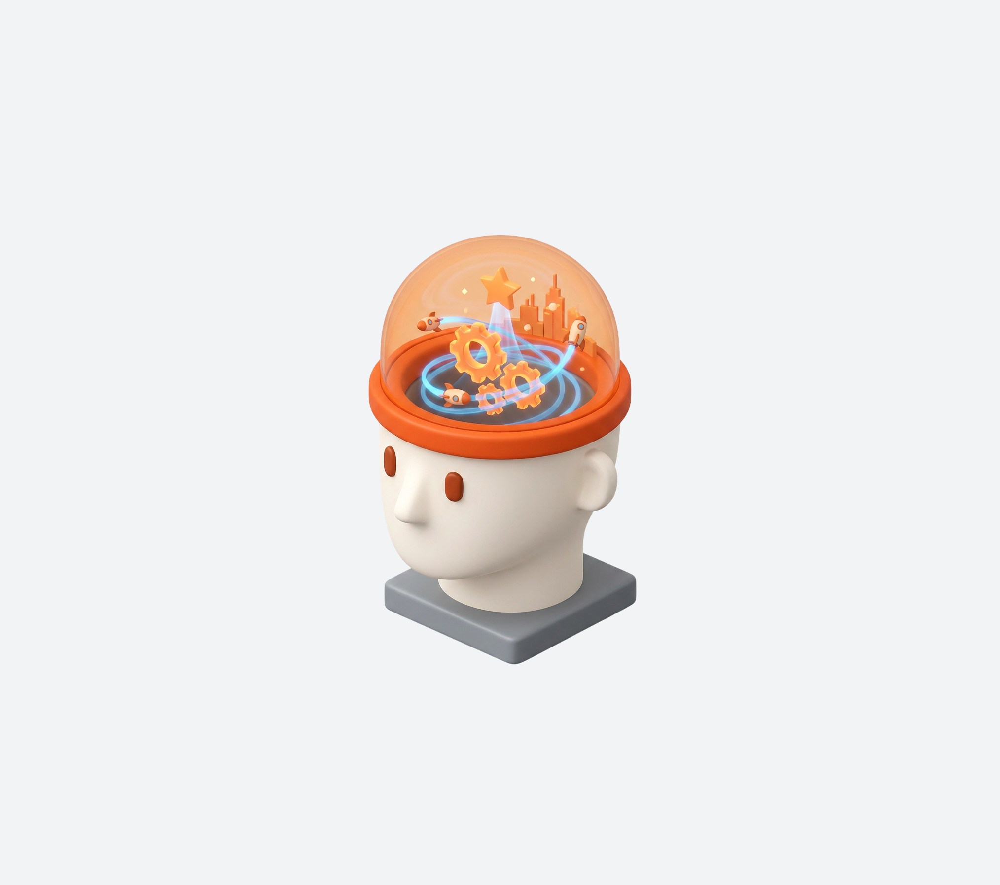
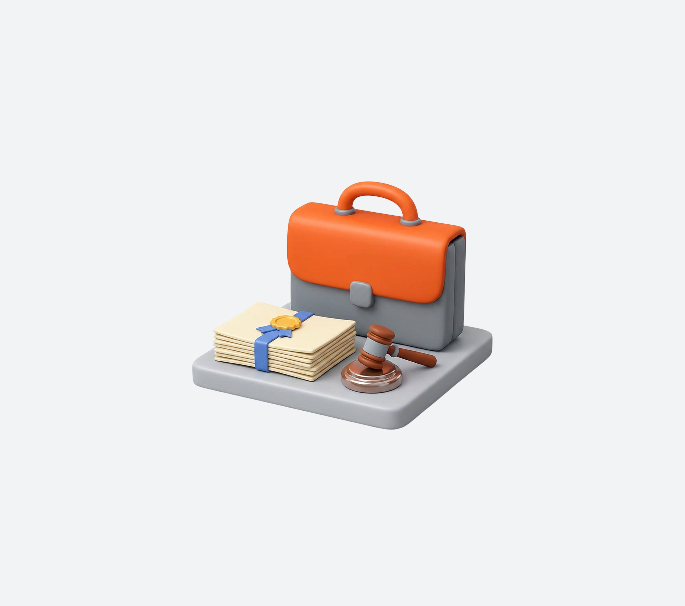
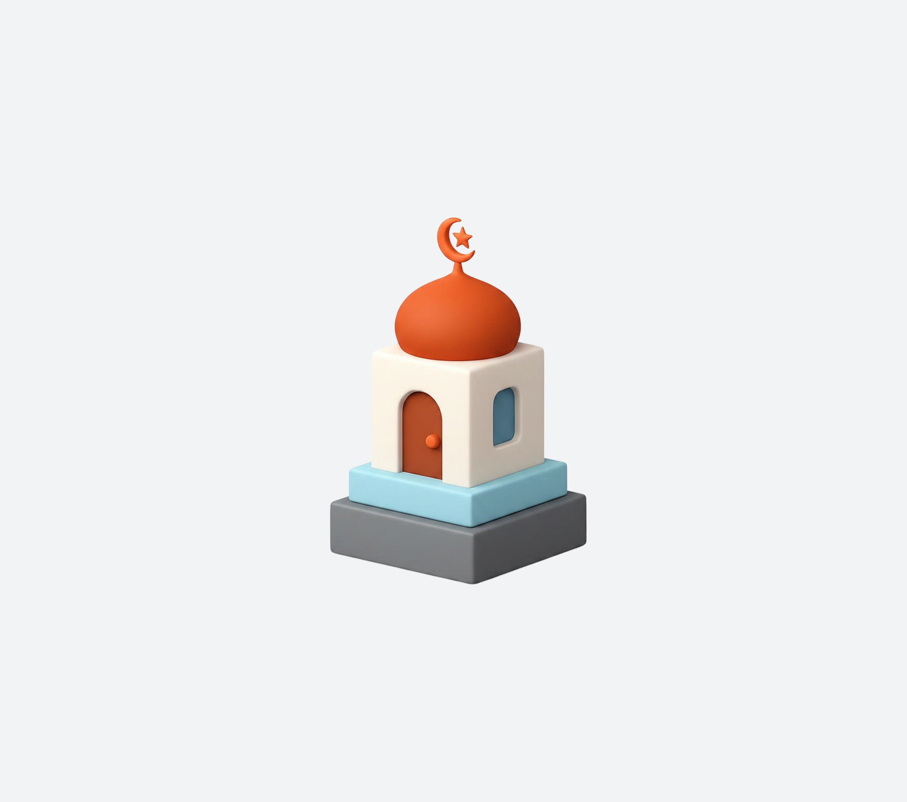
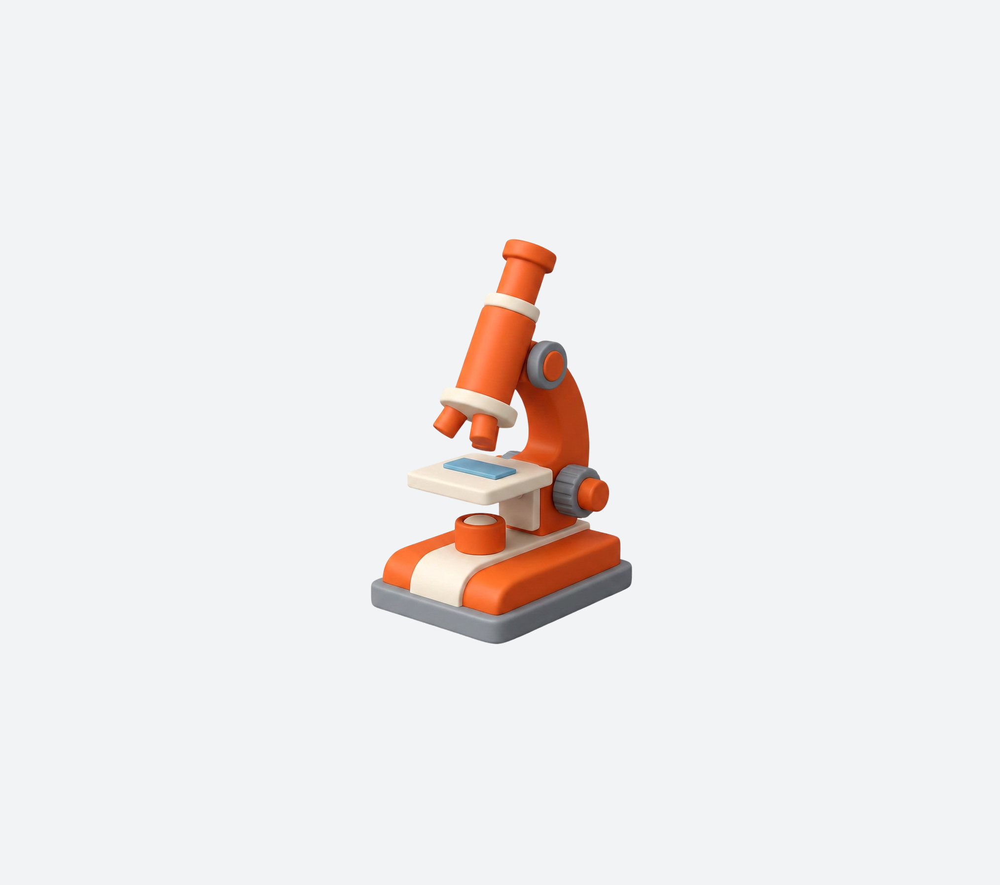
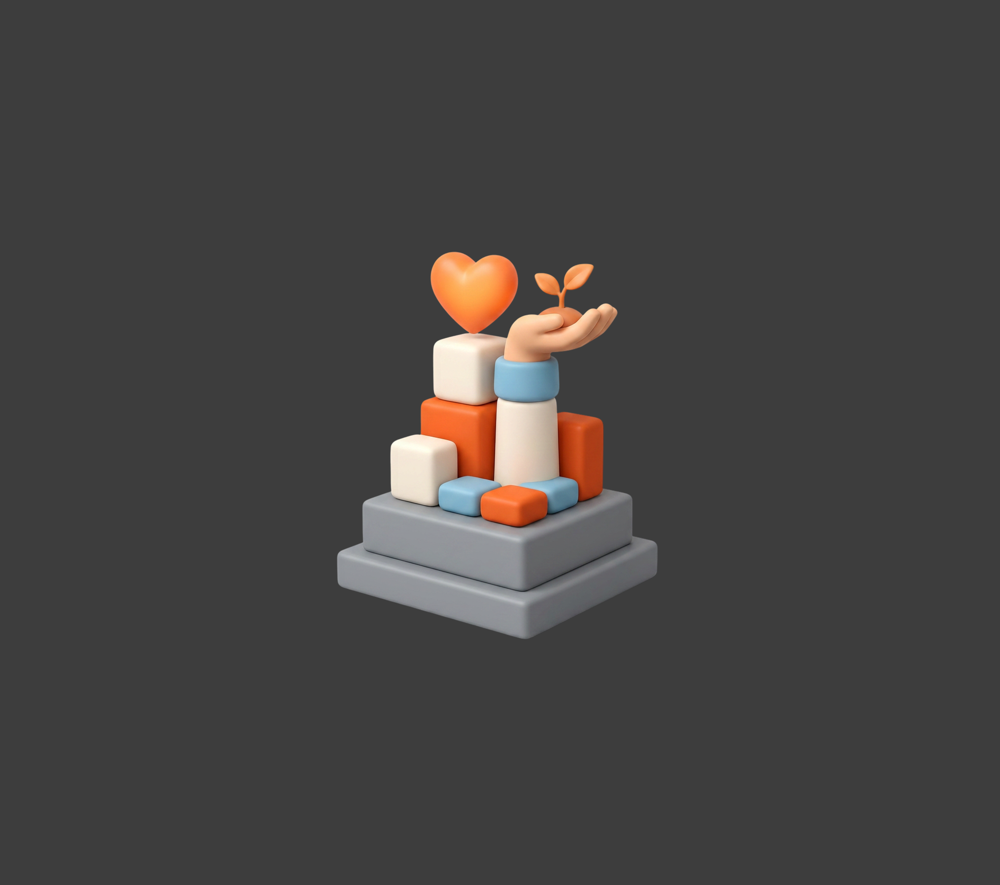
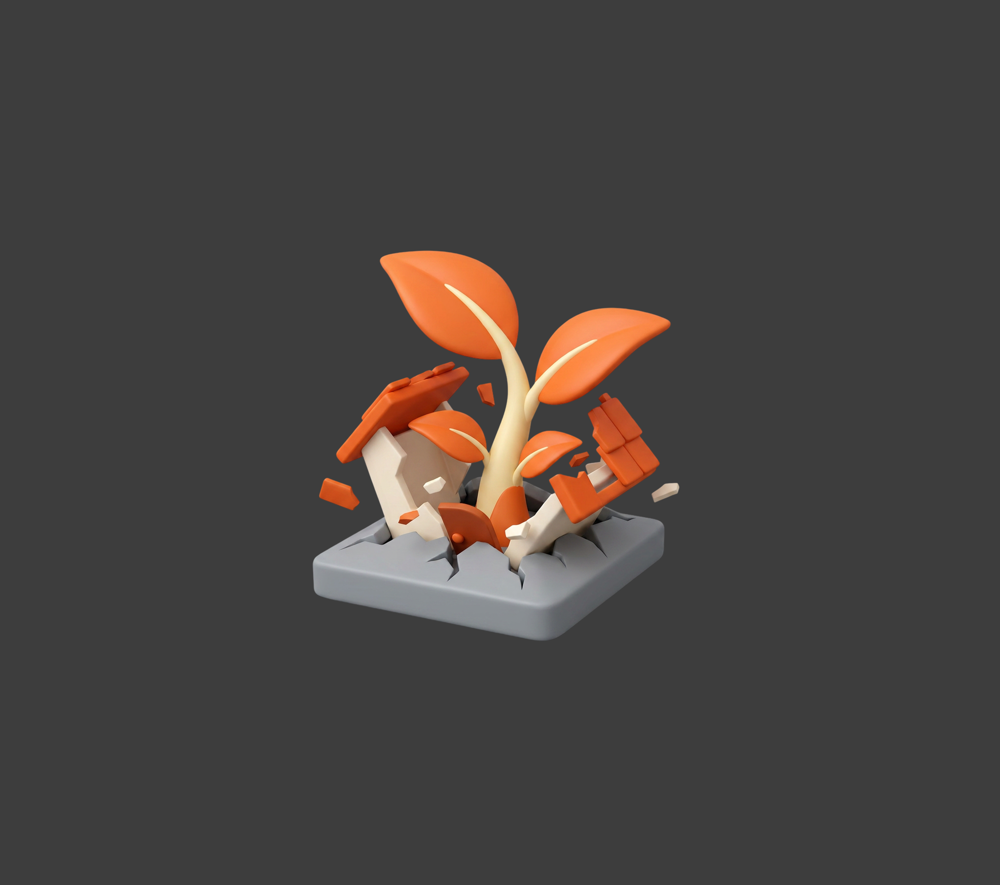

Berorientasi
Masa Depan
Membekali siswa menghadapi dunia yang terus berkembang

Visi dan misi yayasan menjadi fondasi dalam setiap langkah kami membentuk pendidikan yang bermakna, berkarakter, dan relevan dengan masa depan.
Membekali siswa menghadapi dunia yang terus berkembang

Diselenggarakan dengan sistem terstruktur dan tenaga pendidik kompeten

Menanamkan iman, takwa, serta akhlak mulia dalam keseharian proses belajar

Mengembangkan ilmu pengetahuan dan keterampilan teknologi

Menyelenggarakan pembelajaran yang berlandaskan nilai Islam
Membentuk karakter siswa dengan nilai moral dan etika dalam keseharian

Membekali siswa dengan dasar-dasar ilmu sebagai fondasi pembelajaran
Menumbuhkan pola pikir maju agar mampu menguasai IPTEK
